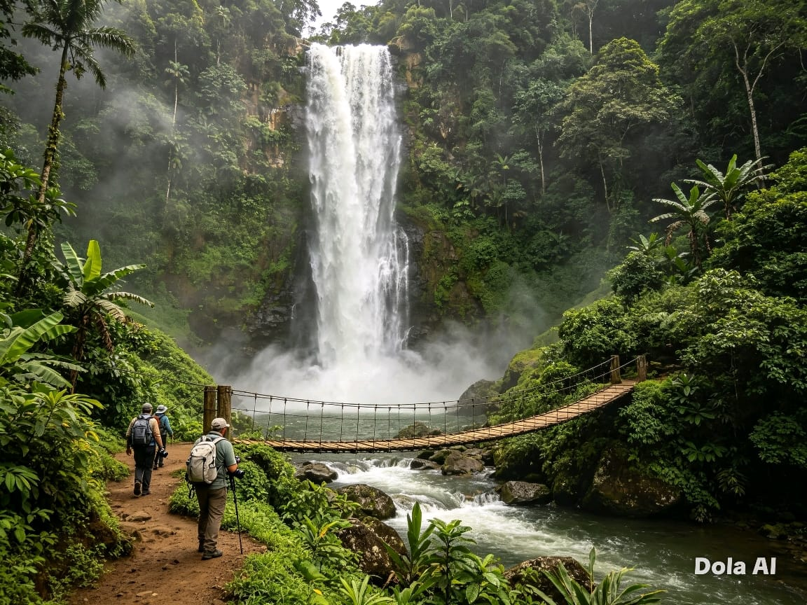
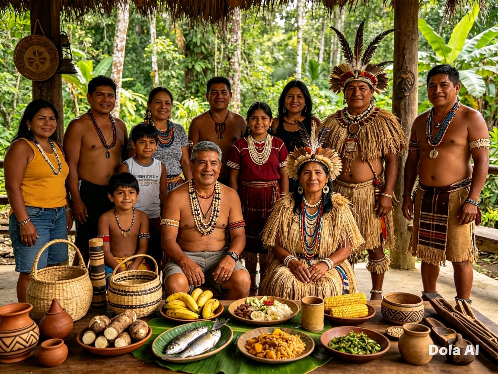
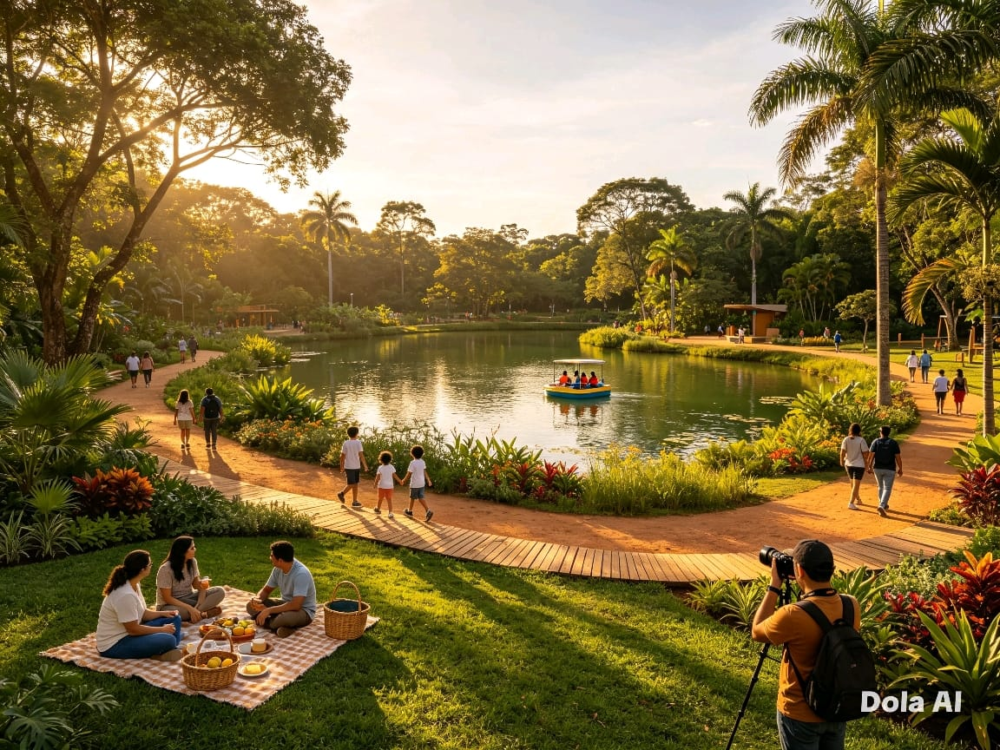
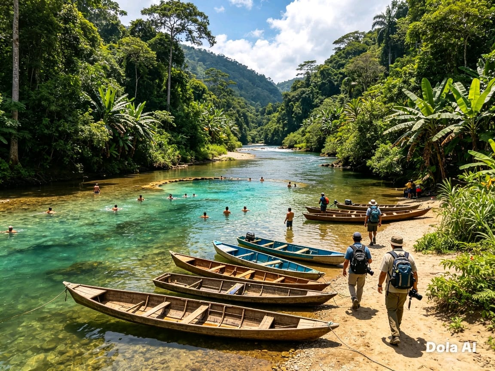
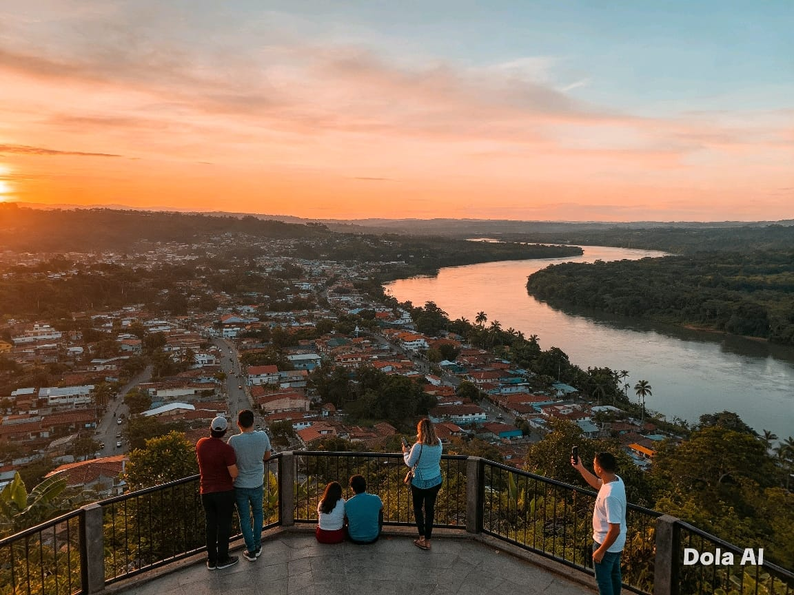
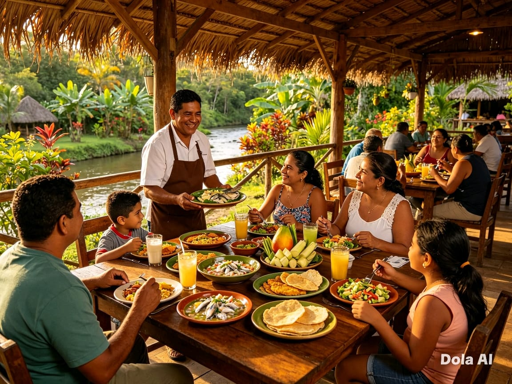
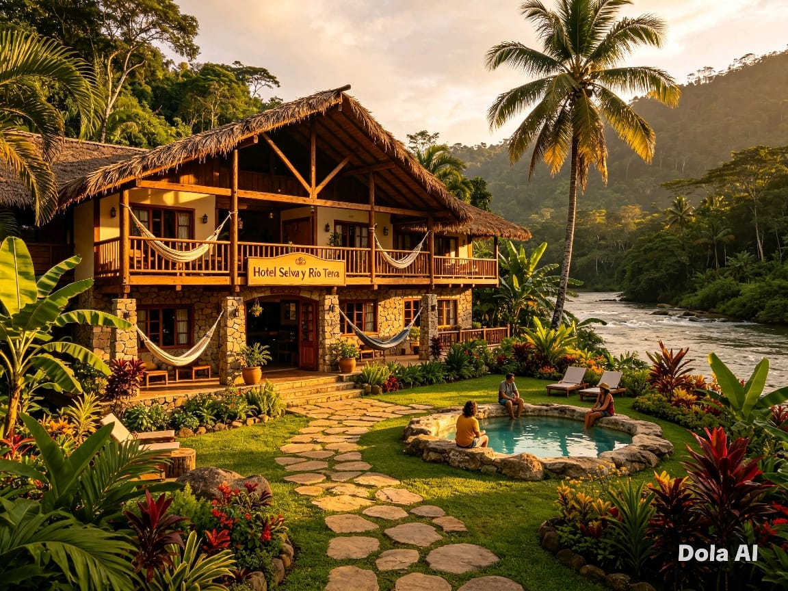

Nuestros Destinos Turísticos
Conoce los mejores lugares de Tena de la provincia de Napo.

Río Napo
Ubicación: Tena, cantón Tena
El río principal de la región, ideal para rafting y navegación. Sus aguas recorren la selva amazónica ofreciendo paisajes espectaculares.
Actividad: Rafting, paseos en bote, observación de aves.

Cascada de Agoyán
Ubicación: 12 km al este de Tena
Impresionante caída de agua de unos 60 metros de altura. Cuenta con puentes colgantes y miradores naturales.
Actividad: Senderismo, fotografía, picnic, caminatas ecológicas.

Comunidad de Sarayacu
Ubicación: Región amazónica de Napo
Comunidad kichwa que conserva sus tradiciones, lengua y conocimientos ancestrales. Turismo comunitario auténtico.
Actividad: Talleres culturales, gastronomía local, artesanías, ceremonias tradicionales.

Parque Ecológico Jumandy
Ubicación: Centro de Tena
Espacio natural protegido dentro de la ciudad. Áreas recreativas, senderos, lago y vegetación nativa.
Actividad: Caminatas familiares, paseo en bote, picnic, fotografía de naturaleza.

Río Misahuallí
Ubicación: Misahuallí, a 40 km de Tena
Río de aguas cristalinas rodeado de selva tropical. Punto de partida hacia comunidades y reservas naturales.
Actividad: Nado en pozas naturales, paseos en canoa, caminatas a reservas.

Mirador de la Cruz
Ubicación: Zona alta de Tena
El mejor panorama de la ciudad y la confluencia de los ríos Tena y Pano. Especial al atardecer.
Actividad: Fotografía, observación de paisaje, visita al atardecer.

Restaurante Selva Y Sazón
Ubicación: Zona alta de Tena
Un lugar donde disfrutar de la gastronomía local en un entorno natural, rodeado de vegetación y vistas panorámicas.
Actividad: Degustación de platos típicos, servicio de catering, eventos especiales.

Hotel Selva y Aventura
Ubicación: Centro de Tena
Un hotel acogedor situado en el corazón de Tena, con vistas a la selva y servicios de calidad.
Actividad: Alojamiento, restaurante, actividades al aire libre.